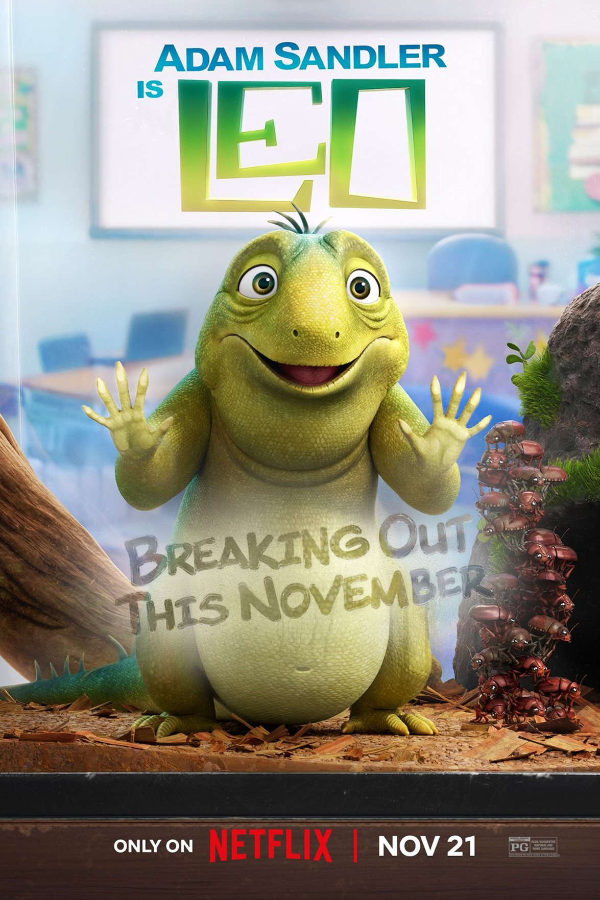

I am a rigging artist specializing in character rigging, including biped, quadruped, bird, reptile, creature, and mechanical rigging for films, commercials, and video games. With over seven years of professional experience, I am currently working at Animal Logic in Sydney, Australia.
Download My Resume